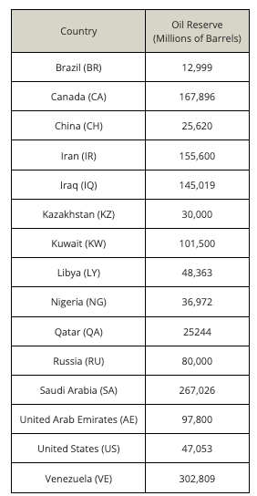
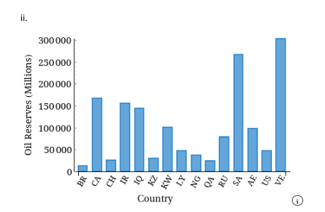
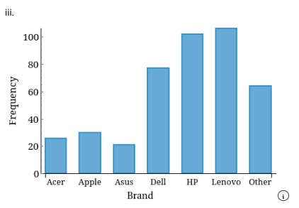
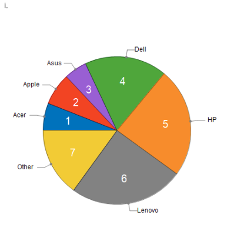
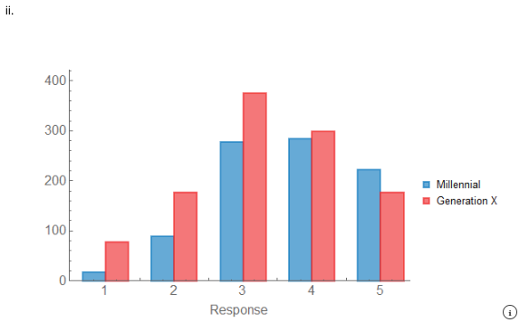
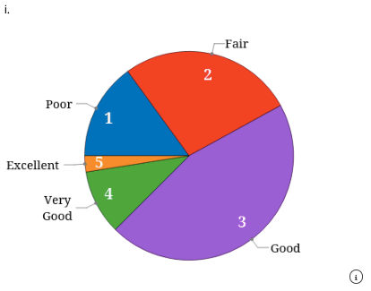

Chapter 2 Quiz
Quiz exercises and answers
Section C: Chapter 2 Quiz
Exercise 02-003 (Types of Data and Information)
For each of the following examples of data, determine the type.
(a) The weekly closing price of the stock of Amazon.com
Correct Answer: interval
(b) The month of highest vacancy rate at a La Quinta motel
Correct Answer: nominal
(c) The size of soft drink (small, medium, or large) ordered by a sample of McDonald’s customers
Correct Answer: ordinal
(d) The number of Toyotas imported monthly by the United States over the last 5 years
Correct Answer: interval
(e) The marks achieved by the students in a statistics course final exam marked out of 100
Correct Answer: interval
Exercise 02-005 (Types of Data and Information)
Residents of condominiums were recently surveyed and asked a series of questions. Identify the type of data for each question.
(a) What is your age?
Correct Answer: interval
(b) On what floor is your condominium?
Correct Answer: interval
(c) Do you own or rent?
Correct Answer: nominal
(d) How large is your condominium (in square feet)?
Correct Answer: interval
(e) Does your condominium have a pool?
Correct Answer: nominal
Exercise 02-007 (Types of Data and Information)
Information about a magazine’s readers is of interest to both the publisher and the magazine’s advertisers. A survey of readers asked respondents to complete the following list. For each item identify the resulting data type.
(a) age
Correct Answer: interval
(b) gender
Correct Answer: nominal
(c) marital status
Correct Answer: nominal
(d) number of magazine subscriptions
Correct Answer: interval
(e) annual income
Correct Answer: interval
(f) Rate the quality of our magazine: excellent, good, fair, or poor.
Correct Answer: ordinal
Exercise 02-009 (Types of Data and Information)
A survey of golfers asked the following questions. Identify the type of data each question produces.
(a) How many rounds of golf do you play annually?
Correct Answer: interval
(b) Are you a member of a private club?
Correct Answer: nominal
(c) What brand of clubs do you own?
Correct Answer: nominal
Exercise 02-023 (Describing a Set of Nominal Data)
When will the world run out of oil? One way to judge is to determine the oil reserves of countries around the world. The table displays the known reserves of the top 15 countries.

(a) Select the correct bar chart.

Correct Answer: ii
Describe your findings.
Correct Answer: The countries with the highest amounts of oil reserves are Canada, Saudi Arabia, and Venezuela.
(b) Why is a bar chart a more appropriate graphical technique for these data than a pie chart?
Correct Answer: i
(c) What other figures are needed to make a pie chart a better choice for these data?
Correct Answer: iv
Exercise 02-041 (Describing a Set of Nominal Data)
A survey asks students to identify which computer brand they have purchased. The responses include: Acer, Apple, Asus, Dell, HP, Lenovo, and Other.
(a) Use a graphical technique that depicts the frequencies.

Correct Answer: iii
(b) Graphically depict the proportions.

Correct Answer: i
(c) What do the charts tell you about the brands of computers used by the students?
Correct Answer: The top three brands of computers purchased by students are Lenovo, HP, and Dell.
Exercise 02-047 (Describing a Set of Nominal Data)
There are numerous organizations that conduct surveys for political parties, government agencies, and private corporations. Two of the most famous in the United States are the Pew Research Center and the Gallup Organization. In Canada, Abacus Data conducts surveys and research for public and private enterprises. All three organizations conduct nonpartisan public opinion surveys, which are published in newspapers and discussed on television newscasts. We will use some of their results throughout this book to create exercises whose data sets will produce the same results as the original study. Below are the date, the population surveyed, the question, and the codes representing the responses. Pew Research Center Date: June–July 2017 Population: American Millennials (born between 1981 and 1996) Population: American Generation X (born between 1965 and 1980)
Spreadsheet file: The following exercise requires a computer and software for the data file (click here to download)
(a) Use a graphical technique that displays the two populations.

Correct Answer: ii
(b) Summarize the data.
Correct Answer: The greatest political value for Millennials is mostly liberal and the greatest political value for Generation X is mixed.
Exercise 02-071 (Describing the Relationship between Two Nominal Variables)
A survey compares how stressful commuting is for drivers living in the city versus the suburbs using the categories: Very or Somewhat Stressful, Not Too Stressful, and Not Stressful at All.
(a) Select the correct graph.
vCorrect Answer: iii
(b) Do stress levels appear to differ between city and suburban drivers?
Correct Answer: ii
Exercise 02-082 (Describing the Relationship between Two Nominal Variables and Comparing Two or More Nominal Data Sets)
A sample of 200 people who had purchased food at the concession stand at Yankee Stadium was asked to rate the quality of the food. The responses were: Poor (1), Fair (2), Good (3), Very Good (4), and Excellent (5).
(a) Draw a graph that describes the data.

Correct Answer: i
What does the graph tell you?
Correct Answer: ii